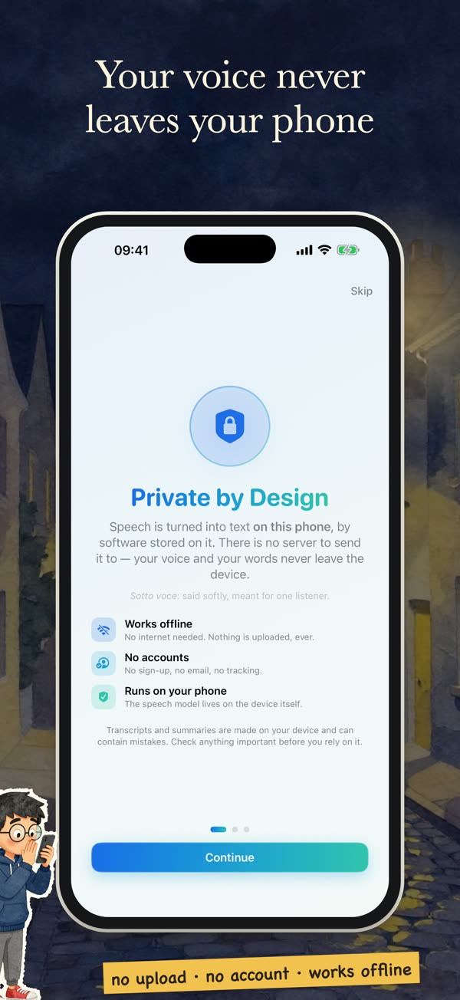
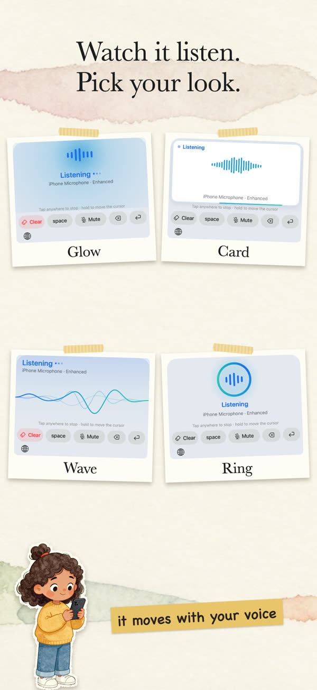
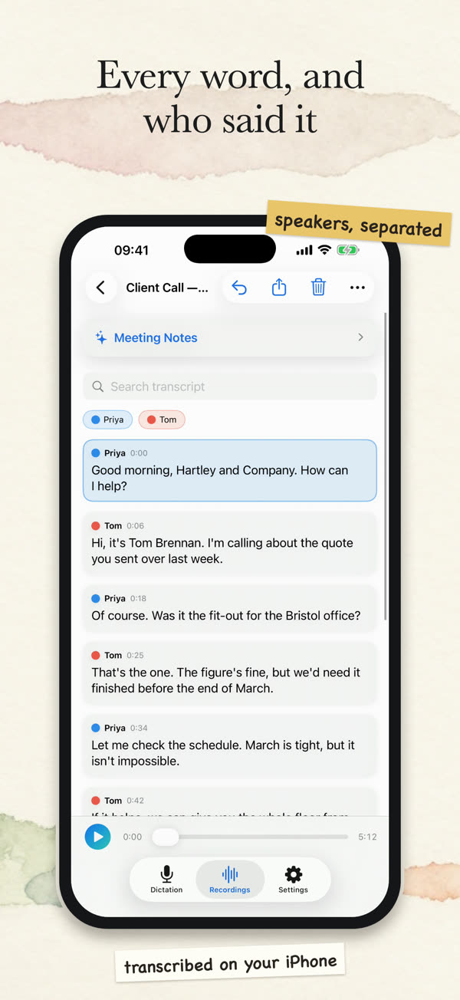
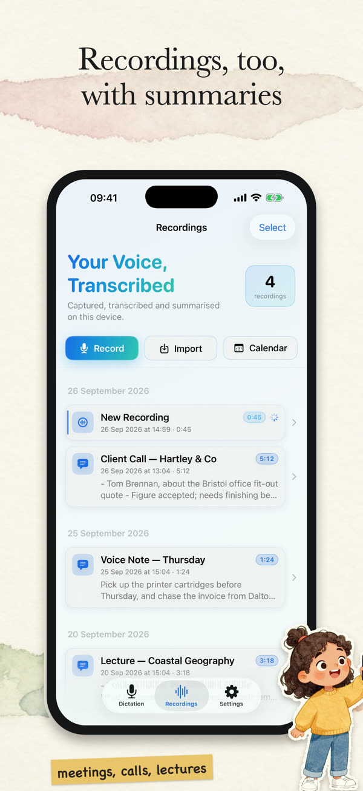

Sotto Voce · Private dictation for iPhone
Your voice, typed. On your phone, and nowhere else.
Dictate anywhere you can type — messages, notes, email, search. Every word is transcribed on your iPhone. Nothing is uploaded, and no account is needed.
Free to try: 1,000 words a week.
Requires iPhone with iOS 26.
Sotto Voce at a glance.
Sotto Voce is a private dictation keyboard and speech-to-text app for iPhone. Everything you say is turned into text on the phone in your hand.
- What it is
- A keyboard for iPhone that types what you say, plus an app for transcribing recordings.
- Where it works
- Any app you can type in: Messages, WhatsApp, Mail, Notes, search boxes.
- Privacy
- Speech is transcribed on the iPhone. Audio is never uploaded or stored on a server. No account, no analytics.
- Offline
- Works with no connection once its speech models have downloaded.
- Price
- Free for 1,000 words a week. Pro removes the limit: monthly, yearly or lifetime.
- Needs
- An iPhone with iOS 26. Summaries of recordings need Apple Intelligence.
- Language
- English.
- Made by
- Daniel Li, an independent developer.
Speak, and it types where you already are.
Your words appear in whatever you were already typing in — a message, an email, a note, a search box. No copying and pasting.
- Speak in any appIt works everywhere the system keyboard does.
- Hears you over the roomBackground noise is stripped out before a word is transcribed.
- Recent dictationsThe last things you said, if you need them again.
- A keyboard that stays out of the wayA full QWERTY that behaves the way iOS does, with the microphone where you expect it. Nothing to learn.
Why on-device matters.
Dictation apps usually send your voice to a server. That is a recording of you in someone else’s data centre, attached to an account. Sotto Voce does the whole thing on the phone in your hand, so there is nothing to leak, subpoena, or sell.
On your phone
Speech is turned into text on your iPhone. Summaries run on the device too.
Nothing uploaded
Your voice is never uploaded, never stored on a server, and never used to train anything.
No account
No sign-up, no email, no analytics, no tracking.
Works offline. The app’s only network request is a one-way download of on-device model files from Hugging Face. None of your audio or text goes with it, and nothing is sent back. Read the privacy policy.

Dictation you can watch.
Sotto Voce shows you it is listening. A live surface moves with your voice as you speak, so you can see it caught the sentence without reading it back. Pick the look that suits you.

Glow
Bars on a soft glow. Muted turns the status, the timer and the bars red.
Card
A card with the status along the top and the words heard along the bottom.
Wave
One wave across the width on a wash of colour. Muted flattens it to a red line.
Ring
A round control holding the waveform. Muted fills the ring red.
Recordings, too.
Record or import audio and get a transcript with speakers separated, plus a summary if you want one — a meeting to write up, a client call, a lecture, a long voice note. Summaries need Apple Intelligence.


Free and Pro.
Try it for free. If you dictate a lot, Pro removes the limit.
Free
No account, no card
- Dictate up to 1,000 words a week
- Every listening look
- Everything on-device, as always
Sotto Voce Pro
No weekly limit
- Billed monthly
- Billed yearly — the first 7 days free
- Or once, for lifetime
Prices are shown in the app, in your currency, before you buy. Purchases are handled by Apple; subscriptions can be managed or cancelled in your Apple Account settings. More about Pro.
What you need.
- iPhone with iOS 26Sotto Voce is an iPhone app and needs iOS 26.
- Apple IntelligenceSome features, such as summaries of recordings, need an iPhone with Apple Intelligence.
- Full Access, onceThe keyboard needs Full Access to receive the text the app transcribes. Here’s why.
Questions people ask.
Is there a dictation app for iPhone that works offline?
Yes. Sotto Voce turns speech into text on the iPhone itself, so it works with no signal or in airplane mode once its speech models have downloaded. It types into any app through its own keyboard.
Does Sotto Voce upload my voice?
No. Your voice is transcribed on your iPhone and is never uploaded, never stored on a server and never used to train anything. There is no account, no analytics and no tracking. The only network request is a one-way download of the speech model files.
What is a private alternative to Wispr Flow on iPhone?
Sotto Voce is a dictation keyboard for iPhone that transcribes on the device, rather than sending your speech to a server as cloud dictation apps do. It works in any app, works offline, and needs no account.
How is it different from the iPhone's built-in dictation?
iOS has dictation built in, and on recent iPhones much of it runs on the device too. Sotto Voce adds a keyboard that visibly reacts while it listens, with four looks to choose from; background noise removal before a word is transcribed; a choice of speech engine, including NVIDIA Parakeet; a list of recent dictations; and recordings transcribed with each speaker labelled.
How much does Sotto Voce cost?
It is free to download and free for up to 1,000 words a week, with no account or card. Sotto Voce Pro removes the weekly limit and is billed monthly, yearly with the first 7 days free, or once for lifetime. Prices are shown in the app in your currency.
Does it work on Android, Mac or Windows?
No. Sotto Voce is an iPhone app and needs iOS 26. Summaries of recordings also need an iPhone with Apple Intelligence.
Which languages does it support?
Sotto Voce is designed and tested for English.
Why does the keyboard ask for Full Access?
An iPhone keyboard needs Full Access to receive the text that the Sotto Voce app transcribes. It is not used to send anything anywhere; there is nowhere for it to go. More on Full Access.